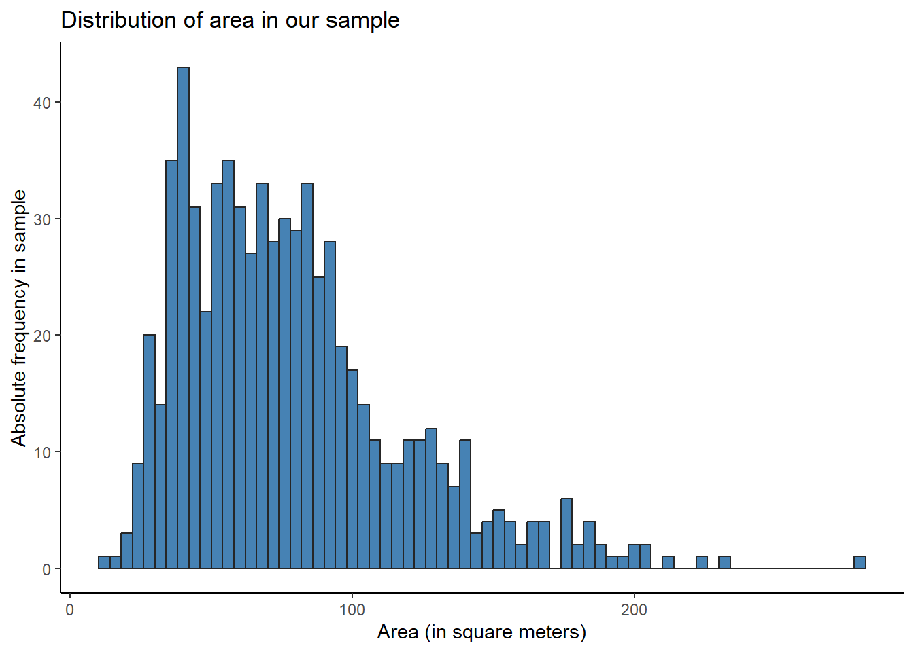
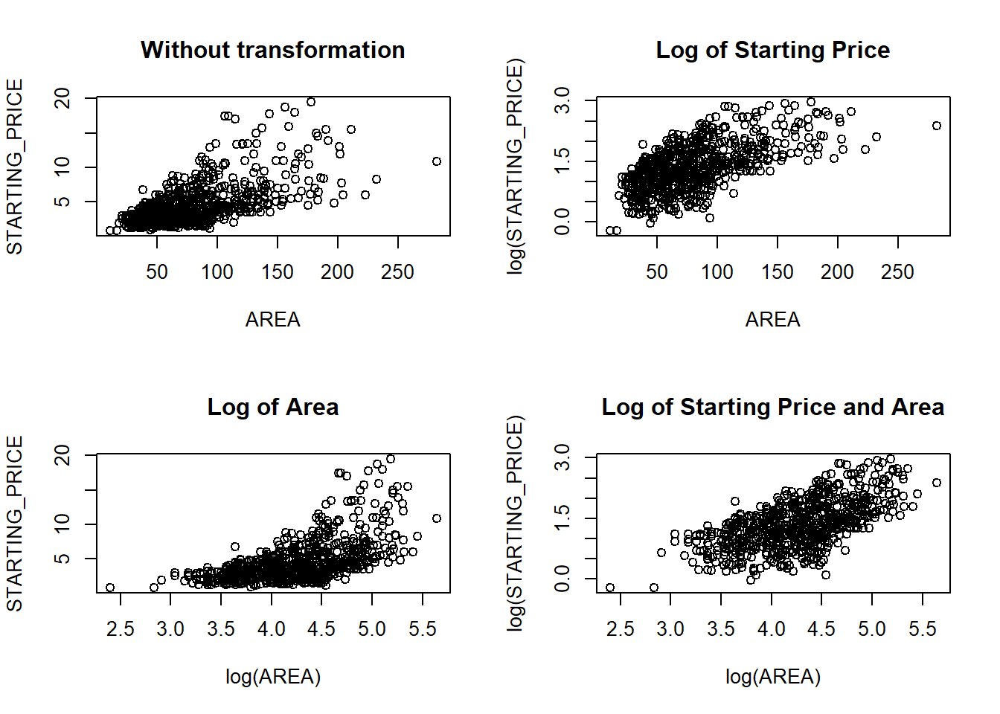

The observed proportion of balconies in our sample (\(\hat{p}\)) is equal to \(0.55635\), but this is not enough to conclude whether or not half the housing units in the region have a balcony. What we want to know is actually how likely it is that we would observe \(\hat{p} = 0.55635\) if the true value of \(p\) is \(0.5\). More formally, we first assume that \(p = 0.5\) (which we denote our null hypothesis \(H_{0}\)) and estimate the likelihood of having observed \(\hat{p} = 0.55635\) given that \(H_{0}\) is true. A 1% significance level means that our test is designed so that, on average, we will incorrectly reject the null hypothesis 1% of the time. The null and alternative hypotheses are as follows: \[H_{0}: p = 0.5 \qquad H_{A}: p \ne 0.5\] We can assume that the distribution of \(\hat{p}\) is approximately normal (since sample estimators for samples of suffiecient size are normally distributed around the real value). For the distribution, we use mean 0.5 (\(H_{0}\)) and standard deviation 0.019. Formally, the distribution is as follows: \[ Since \quad n\hat{p}\hat{q} = 175.25 > 5, \qquad \hat{p} \sim N\left(0.5, \sqrt{\frac{0.5 \cdot 0.5}{701}}\right) = N(0.5, 0.019) \]
Using the formula
z <- (phat - p0) / se0p_value <-2* (1-pnorm(abs(z)))print(p_value)
[1] 0.002847032
Using built-in functions
test_balcony =prop.test(n_balconies, n = n, p =0.5, alternative ="two.sided", conf.level =0.99)test_balcony$p.value
[1] 0.003218923
Comparing both metods
print(paste0("p-value with R of: ",test_balcony$p.value))
[1] "p-value with R of: 0.00321892272071506"
print(paste0("p-value by hand of: ",p_value))
[1] "p-value by hand of: 0.00284703196300162"
Conclusion
Since the p-value is less than 0.01 in both cases, the observed proportion of balconies is very unlikely under the null hypothesis, even on the 99% significance level. Therefore, we reject the null hypothesis that \(p = 0.5\).
Task 2
Using a significance level of 5%, test the hypothesis that the expected size of the housing units in the region is 75m2.
Data and problem description
alpha <-0.05mu <-75xbar <-mean(data$AREA)se <-sqrt(sum((data$AREA - mu)^2) / (n-1)) # Population variance unknownse_xbar <- se /sqrt(n) # Variance of xbardata %>%ggplot() +geom_histogram(aes(AREA), fill ="steelblue", color ="grey15", binwidth =4) +# Not really normally distributed...labs(title ="Distribution of area in our sample") +xlab("Area (in square meters)") +ylab("Absolute frequency in sample") +theme_classic()

The distribution as shown by the histogram is not clearly normally distributed. However, the sample size is greater than 30, so we approximate the distribution of \(\bar{x}\) with a normal distribution by the central limit theorem.
The null and alternative hypotheses are as follows: \[H_{0}: \mu = 0.75 \qquad H_{A}: \mu \ne 0.75\]
mean_test <-t.test(data$AREA, mu = mu, alternative ="two.sided", conf.level =0.95)mean_test$p.value
[1] 0.004656418
Comparing both metods
print(paste0("p-value with R of: ",round(mean_test$p.value,3)))
[1] "p-value with R of: 0.005"
print(paste0("p-value by hand of: ",round(p_value2,3)))
[1] "p-value by hand of: 0.005"
Conclusion
The p-value is either 0.0046 or 0.0049 depending on the method, but since the level of significance is 0.05 we reject the null hypothesis. The interpretation is that the mean (or expected) area of the housing units is not 75 square meters.
Task 3
Estimate the proportion of apartments in the region through a 90% confidence interval.
Data and problem description
phat <-sum(data$TYPE =="Apartment") / nz <-qnorm(0.95) # Two-sided, so 90% ci uses z = 0.95se <-sqrt(phat*(1-phat)/n)
The 90% confidence interval for a proportion is as follows: \[ \hat{p} \pm z_{0.05} \sqrt{\frac{\hat{p}(1 - \hat{p})}{n}} \]
The confidence interval for the mean (expected) number of rooms in the region is [3.033163, 3.269262].
Task 5
Fit a linear regression that explains STARTING_PRICE in terms of some or all of the remaining variables (REGION, TYPE, BALCONY, ROOMS and AREA). (Tips: i. Take into account that the regression is fitted with predictive purposes; ii. Make use of appropriate numerical and graphical tools; iii. Make sure that you report the estimated regression in equation form; iv. Consider transformations and interactions between variables; v. Check the model assumptions; vi. Use appropriate criteria to decide which variables should be included in the model.)
Data exploration and transformation
Linear regression makes certain assumptions, one of which is a linear relationship between the independent variables and the dependent variable. Before creating and comparing different multiple regression models, we must check the linearity assumption between the starting price and the numerical independent variables (rooms and area), and conduct appropriate transformations as needed.
We start by checking the relationship between rooms and starting price.
par(mfrow =c(2, 2))plot(STARTING_PRICE ~ ROOMS, data = data, main ="Without transformation")plot(log(STARTING_PRICE) ~ ROOMS, data = data, main ="Log of Starting Price")plot(STARTING_PRICE ~log(ROOMS), data = data, main ="Log of Rooms")plot(log(STARTING_PRICE) ~log(ROOMS), data = data, main ="Log of Starting Price and Rooms")

No clear improvement by transforming (INTERPRET THIS MORE PROBABLY)
We follow this by checking the linearity assumption between Starting Price and Area.
par(mfrow =c(2, 2))plot(STARTING_PRICE ~ AREA, data = data, main ="Without transformation")plot(log(STARTING_PRICE) ~ AREA, data = data, main ="Log of Starting Price")plot(STARTING_PRICE ~log(AREA), data = data, main ="Log of Area")plot(log(STARTING_PRICE) ~log(AREA), data = data, main ="Log of Starting Price and Area")
While the plot without any transformations shows a quite linear relationship between the starting price and area of housing units, it also displays more heteroskedasticity for larger housing units. Taking the log of both starting price and area renders a linear and homoskedastic plot, and could be a good option for further analysis and model creation.
Fit multiple regression model
We create two multiple regression models: one without any log transformations, and one using the log of the starting price and the area. We start by including all interactions between the covariates, and use stepwise backwards selection to remove abundant interactions and variables.
Here is the model without transformations:
m1 <-lm(STARTING_PRICE ~ REGION + TYPE + BALCONY + ROOMS + AREA + REGION*TYPE + REGION*BALCONY + REGION*ROOMS + REGION*AREA + TYPE*BALCONY + TYPE*ROOMS + TYPE*AREA + BALCONY*ROOMS + BALCONY*AREA + ROOMS*AREA, data = data)no_log_model <-step(m1, direction ="backward", trace =0)summary(no_log_model)
The adjusted R-squared is greater for the model using logs.
Task 6
The dataset test.xlsx that can be found in Athena (Resources/Part 1/Assignment) contains information on the region, the type of housing unit, the presence of a balcony, the number of rooms and the area of ten housing units. Use your regression model from exercise 5 to predict the starting price of these housing units (Provide a point prediction, ˆy, and an interval prediction.)
Point prediction
# Using model without log transformation#test_1 <- test#pred_1 <- predict(no_log_model, newdata = test_1)#test_1$STARTING_PRICE <- pred_1#head(test_1)# Using model with log transformation#test_2 <- test#pred_2 <- predict(log_model, newdata = test_2)#test_2$STARTING_PRICE <- pred_2#head(test_2)